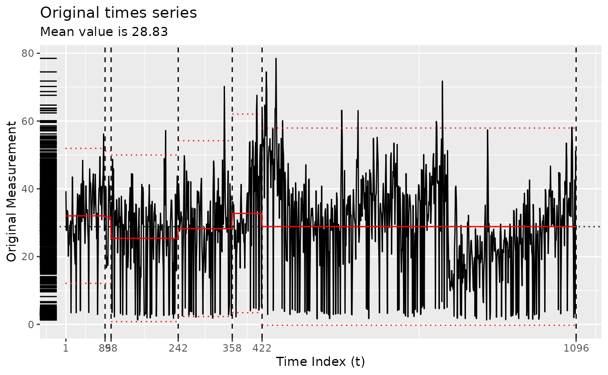
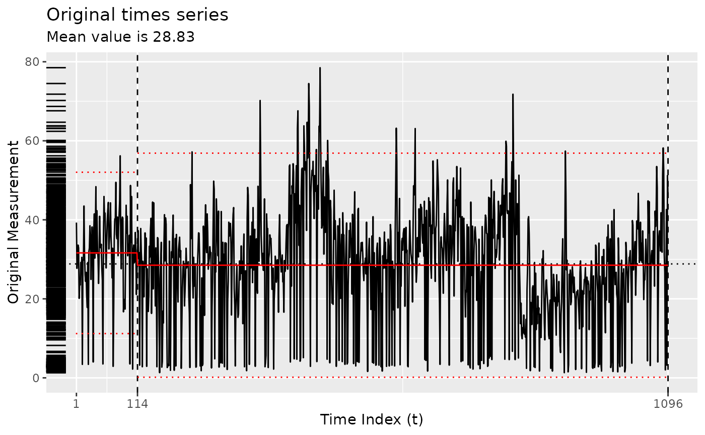
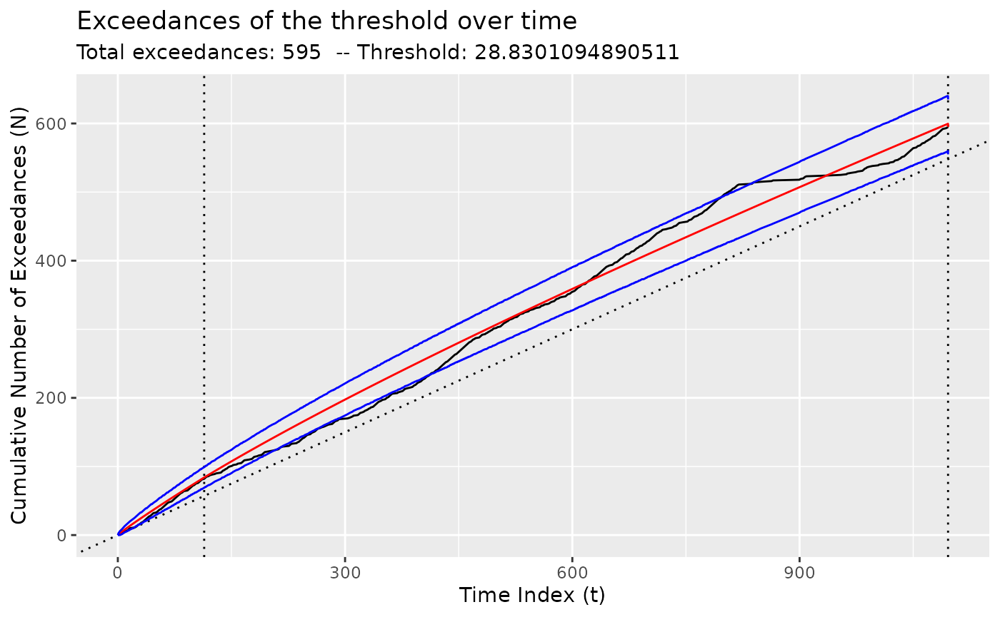
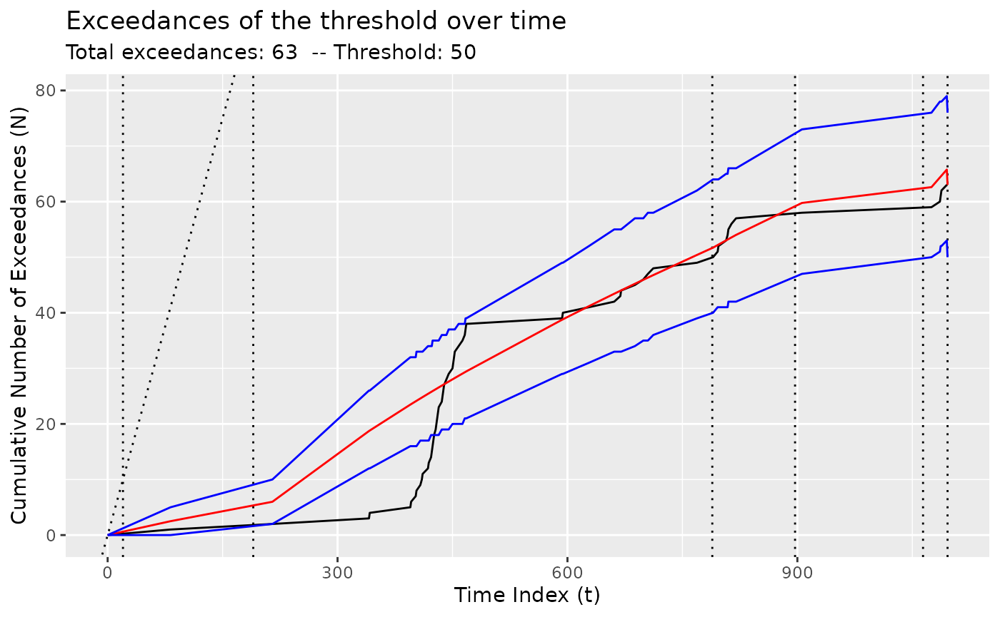

Using Taimal's algorithm
taimal.Rmd
plot(bogota_pm)Using the original implementation of Taimal’s algorithm
x <- segment(bogota_pm, method = "taimal", num_generations = 5)
#> method: taimal
#> | | | 0% | |=============== | 25% | |============================== | 50% | |============================================= | 75% | |============================================================| 100%
changepoints(x)
#> [1] 85 98 242 358 422
plot(x)
Using the GA implementation of Taimal’s algorithm
y <- segment(bogota_pm, method = "ga-taimal", maxiter = 50, run = 10)
#> method: ga-taimal
#> method: pelt
#> method: binseg
#> method: wbs
#> Seeding initial population with probability: 0.0145985401459854
changepoints(y)
#> x114
#> 114
plot(y)
diagnose(y$model)
tidy(y)
#> # A tibble: 2 × 12
#> region num_obs min max mean sd begin end param_alpha param_beta
#> <chr> <int> <dbl> <dbl> <dbl> <dbl> <dbl> <dbl> <dbl> <dbl>
#> 1 [0,114) 113 2.2 56.2 31.6 10.4 0 114 0.932 0.982
#> 2 [114,1.1e+… 983 1.3 78.5 28.5 14.5 114 1096 0.840 0.534
#> # ℹ 2 more variables: logPost <dbl>, logLik <dbl>
glance(y)
#> # A tibble: 1 × 9
#> pkg version algorithm params num_cpts model criteria fitness
#> <chr> <pckg_vrs> <chr> <list> <int> <chr> <chr> <dbl>
#> 1 ga 3.2.4 Genetic <named list [6]> 1 nhpp BMDL 1970.
#> # ℹ 1 more variable: elapsed_time <drtn>Changing the threshold
By default, the threshold is set to the mean of the observed values,
but it can be changed using the model_fn_args argument to
segment().
Please note that the number of iterations (maxiter) of
the genetic algorithm has been set very low here for ease of
compilation. NOTA BENE: To obtain more robust result,
set maxiter to be something much higher. You can also
experiment with the popSize argument to
segment().
z <- segment(
bogota_pm,
method = "ga-taimal",
maxiter = 5,
model_fn_args = list(threshold = 50)
)
#> method: ga-taimal
#> method: pelt
#> method: binseg
#> method: wbs
#> Seeding initial population with probability: 0.0145985401459854
changepoints(z)
#> x20 x190 x789 x897 x1064
#> 20 190 789 897 1064
plot(z)
diagnose(z$model)
tidy(z)
#> # A tibble: 6 × 12
#> region num_obs min max mean sd begin end param_alpha param_beta
#> <chr> <int> <dbl> <dbl> <dbl> <dbl> <dbl> <dbl> <dbl> <dbl>
#> 1 [0,20) 19 3.4 43.5 28.1 8.09 0 20 0.104 0.126
#> 2 [20,190) 170 1.3 56.2 28.8 12.2 20 190 0.184 0.0903
#> 3 [190,789) 599 1.6 78.5 30.9 14.7 190 789 0.534 0.167
#> 4 [789,897) 108 1.7 71.8 24.4 15.2 789 897 0.515 0.0756
#> 5 [897,1.06e… 167 1.3 57.4 23.5 11.5 897 1064 0.325 0.0841
#> 6 [1.06e+03,… 33 2 58.2 33.8 14.2 1064 1096 0.595 0.0792
#> # ℹ 2 more variables: logPost <dbl>, logLik <dbl>
glance(z)
#> # A tibble: 1 × 9
#> pkg version algorithm params num_cpts model criteria fitness
#> <chr> <pckg_vrs> <chr> <list> <int> <chr> <chr> <dbl>
#> 1 ga 3.2.4 Genetic <named list [6]> 5 nhpp BMDL 614.
#> # ℹ 1 more variable: elapsed_time <drtn>